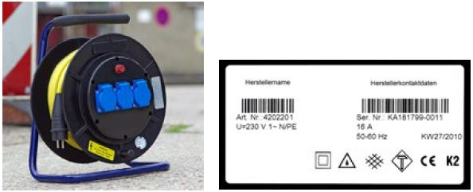
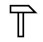
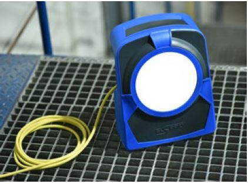
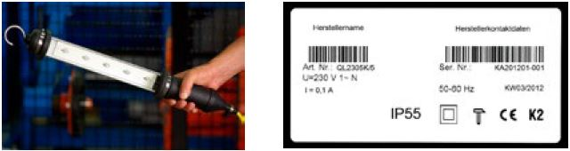

Bewegliche Leitungen (Ausnahme für Geräteanschlussleitungen siehe Abschnitte 6.4 und 6.5) müssen von der Bauart H07RN-F oder H07BQ-F oder höherwertig sein (H07BQ-F ist nur eingeschränkt beständig gegenüber thermischer Einwirkung von außen, z. B. bei Schweißarbeiten).
Bei sehr hohen mechanischen Beanspruchungen, z. B im Bergbau oder Tunnelbau, sind nur Leitungen höherwertiger Bauart zu verwenden, z. B. NSSHÖU.
An Stellen, an denen Leitungen mechanisch besonders beansprucht werden können, sind sie geschützt zu verlegen. Leitungen gelten als geschützt verlegt, wenn sie z. B.
Leitungsroller sind geeignet, wenn sie die Anforderungen nach Grundsatz GS-ET-35 "Grundsätze für die Prüfung und Zertifizierung von Leitungsrollern für Bau- und Montagestellen" erfüllen. Das bedeutet, dass sie nach DIN EN 61242 (VDE 0620-300) oder DIN EN 61316 (VDE 0623-100) gebaut sind und zusätzlich folgende Merkmale aufweisen:
Leitungsroller sind in der vorgesehenen Gebrauchslage (aufrecht auf Tragegestell stehend) zu betreiben.

Abb. 2: Geeigneter Leitungsroller und Typschild mit notwendigen Angaben
Installationsmaterial, z. B. Schalter, Steckvorrichtungen, muss während des Betriebes mindestens die Schutzart IP X4 erfüllen. Die vom Hersteller vorgesehene Einbaulage und Verwendung sind zu beachten.
Die Gehäuse von Steckvorrichtungen müssen aus Isolierstoff bestehen und eine ausreichende mechanische und thermische Beständigkeit aufweisen.
Wenn die Verschraubung einer Steckvorrichtung nicht nur abdichtet, sondern auch die Zugentlastung übernimmt, ist bei wiederkehrenden Prüfungen darauf zu achten, dass die Verschraubung fest angezogen ist und die genannten Funktionen weiterhin erfüllt werden. Falls erforderlich, sind die Leitungen neu abzusetzen und anzuschließen.
Diese müssen mindestens der Schutzart IP 2X entsprechen und mit einer Geräteanschlussleitung gemäß Abschnitt 6.1 ausgestattet sein.
Bis zu einer Leitungslänge von 4 m ist als Geräteanschlussleitung auch die Leitungsbauart H05RN-F oder H05BQ-F zulässig, soweit nicht die zutreffende Gerätenorm eine höherwertige Bauart fordert.
Bei erschwerten mechanischen Bedingungen müssen Leuchten ihren jeweils zutreffenden Produktnormen (Reihe VDE 0711) entsprechen und zusätzlich folgenden Anforderungen genügen:

gekennzeichnet.Leuchten, die als Bodenleuchten eingesetzt werden, müssen mindestens in der Schutzart IP 55 ausgeführt sein (für in Leuchten eingebaute Steckdosen gilt Abschnitt 6.3).

Abb. 3: Geeignete Bodenleuchte
Handleuchten müssen mindestens in der Schutzart IP 55 ausgeführt sein und den Festlegungen in VDE 0711-2-8 entsprechen.
Handleuchten müssen der Schutzklasse II oder III entsprechen. Handleuchten zur Verwendung bei erhöhter elektrischer Gefährdung müssen der Schutzklasse III entsprechen (siehe Abschnitt 5.1.2).
Körper, Griff und äußere Teile der Fassung müssen aus Isolierstoff bestehen. Handleuchten müssen mit einem Schutzglas und einem Schutzkorb ausgerüstet sein.
Der Schutzkorb kann entfallen, wenn statt des Schutzglases eine bruchfeste Umschließung aus Kunststoff oder vergleichbarem Material vorhanden ist.
Die Leitungseinführung muss über eine ausreichende Zugentlastung und einen Knickschutz verfügen.
Die Geräteanschlussleitung muss den Anforderungen aus Abschnitt 6.1 entsprechen.
Bis zu einer Leitungslänge von 5 m ist als Geräteanschlussleitung auch die Leitungsbauart H05RN-F oder H05BQ-F zulässig.

Abb. 4: Geeignete Handleuchte mit Typschild